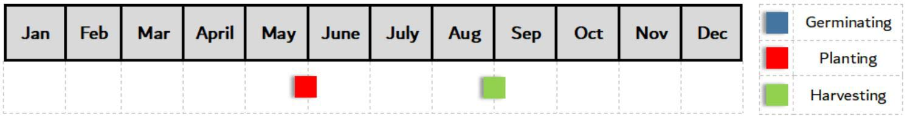

Anise
Soil Requirements
Anise requires a slightly acidic soil of between 6.3 to 7.0 ph. Test your soil with a soil ph meter and if required, add alkaline by either using lime, mulches or a bicarbonate of soda solution (1 tsp per 2 litres of water). Alternatively, if there is large concentrations of alkaline in the soil, treat with a vinegar solution (1 tablespoon per 2 litres) until ph levels are right.
Anise also requires semi loose soil that is free from weeds and roots. This is because the plant needs good drainage.
Space Requirements
| Area | 50cm² |
|---|---|
| Height | 1.5m |
Additional Information
Star anise trees take at least 6 years of growth to produce fruit.
Seed Germination & Planting
Plant seeds directly in soil at the end of May/beginning of June. The seed germinates best at between 18’C-20’C.
Place seed 1cm into the soil and cover with more soil.
Plant in an area that receives partial sun light as direct sunlight will require frequent watering.
Water & Fertiliser Requirements
Water plant daily. Once established, water every other day.
In the 2nd year of growth, apply 7cm layer of aged manure or compost to the surrounding area of the tree. Do this at the start of April and repeat once a year.
Pruning Requirements
Whilst plant is growing, pruning maintenance isn’t required. However, remove dead or dying branches to maximise leaf surface area for photosynthesis.
Do not prune plant after late august as this will give it the best chance of surviving the winter months.
The plant should reach a height of 1.5 metres at the end of its 2nd year. If you desire to shape the plant, this is the best time to do so.
Yeild:
500g per year on average.
Harvesting Guidelines
Star anise trees take at least 6 years of growth to produce fruit.
Harvest whilst fruit is unripe and green before leaving to dry out in the sun. This is normally done at the end of August/beginning of September. Dry out until a red/brown colour is achieved.
Year Plan
Storing Guidlines
Once harvested, place on a baking tray and into a pre-heated oven at 70’C for 15 minutes. This will ensure the star anise is pasteurised and free from any harmful bacteria.
Store star anise in an air tight container and consume within 7-8 months.